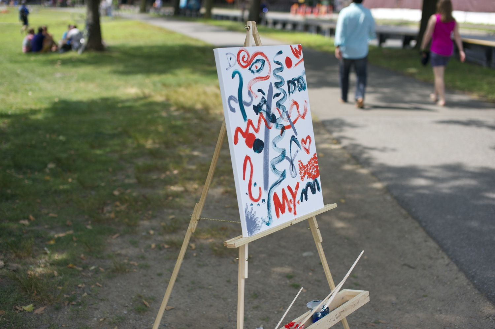
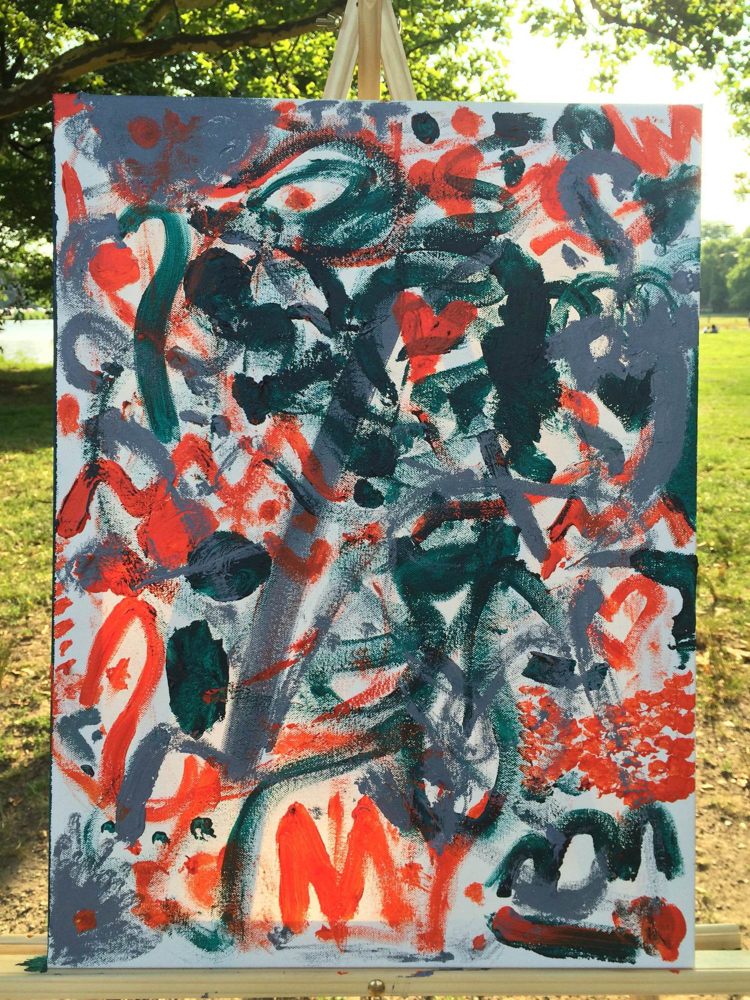

Lately, I've been drawn to the idea of inspiring the creativity of a community.
There's this false belief that some people are born creative and others aren't. Creativity is simply a muscle and as with all muscles, it needs to be exercised in order to improve. Of course, inspiring someone to go out and create a painting or write a short story is no small task. As with all behavior, there is a huge amount of friction that must be overcome in order to move into action. One way to combat this friction is to reduce it simply by reducing the size of the behavior. Baby steps.
I decided that if I couldn't inspire people to create a painting by themselves, I might be able to inspire a community of people to collectively create one. So one Sunday morning, I brought a cheap easel out to the park by the Charles river in Cambridge. The easel was armed with a blank canvas, three small jars of paint, and a note that said: "Do something creative. Limit one stroke per person."
An hour later, this is what I saw:
That, to me, was enough. With no expectations of what might happen, just seeing a few strokes on this canvas was exhilarating. Immediate gratification. This feeling was only amplified when I returned a few hours later to see what would be the final result of this canvas.
I was hooked on the idea. I built a new easel that would be sturdy enough to sit out there on a windy day (after watching the first easel blow over a few times) and put a new canvas out by the river each Sunday for the next eight weeks. Each canvas came with a different set of three colors, and every completed painting (defined either by the paint running out or the sun setting - whatever came first) had it's own character.
It was incredible to watch people interact with it. I often watched a large group of people walk right by it, and then one person in the group would stop, walk back, add a stroke, and then invite the entire group over. It was truly collaborative.
Children were especially keen to add to the paintings, and often broke the one stroke rule (totally acceptable). One morning when I rolled the canvas out there, a young family was waiting behind me while I set it up. The young boy immediately grabbed the brush and went at it, while the mother told me he has painted on three or four of them already, and that it has become a part of their Sunday routine. The father then looked over at the mother and said: "He really likes this - maybe we should get him an easel." That quote made the project for me. If all this effort did was inspire one parent to promote the arts to their child, it would still be a success.
It did more than that though. Each week, nearly one hundred people contributed to the paintings, creating a really unique set. One day, I watched three children in their pre-teens walk up to the canvas, paint over everything in a single stroke, snap the brush, and proceed to stab the painting several times. It was painful to watch, and at the time - a little infuriating. In reflection though, that particular painting really does stand out from the set, so I guess they added to the art in their own way.
As Boston winter hit, I was forced to pause the project, but I quietly plan to resume this project in the Spring. If you would like to follow the project, please feel free to like the Facebook page or follow it on Twitter.
The Facebook page also has a series of snapshots of each canvas as it was painted throughout the day.